Môn Toán - Lớp 12
Question 1. Cho hàm số $y = f(x)$ có đồ thị như hình dưới đây.
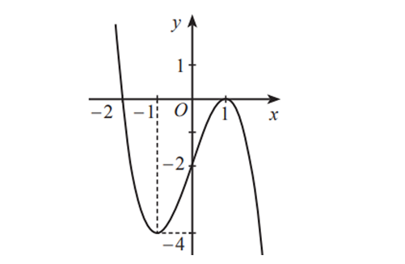
Hàm số đã cho đồng biến trên khoảng nào trong các khoảng sau đây?
Question 2. Cho hàm số $y = f(x)$ có bảng biến thiên như sau:
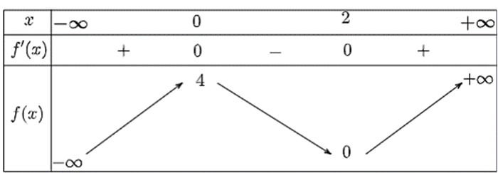
Điểm cực tiểu của hàm số đã cho là
Question 3. Cho hàm số $y = f(x)$ có đồ thị như hình dưới đây.
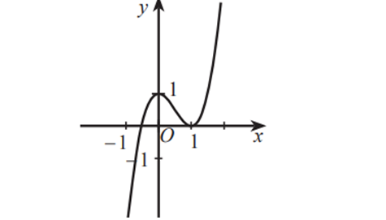
Giá trị lớn nhất của hàm số đã cho trên đoạn $[-1;1]$ là:
Question 4. Cho hàm số $y = f(x)$ xác định trên $\mathbb{R} \setminus \{1\}$ và có đồ thị như hình dưới đây.
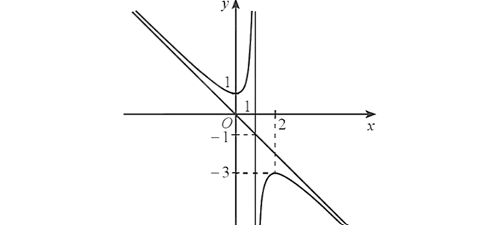
Phương trình đường tiệm cận đứng và phương trình đường tiệm cận xiên của đồ thị đã cho là
Question 5. Cho hàm số $y = f(x)$ có đồ thị là đường cong (C) và các giới hạn $\lim_{x \to 2^+} f(x)=1$; $\lim_{x \to 2^-} f(x)=1$; $\lim_{x \to -\infty} f(x) = 2$; $\lim_{x \to +\infty} f(x) = 2$. Hỏi mệnh đề nào sau đây đúng?
Question 6. Đồ thị hàm số nào dưới đây có dạng như đường cong trong hình dưới?
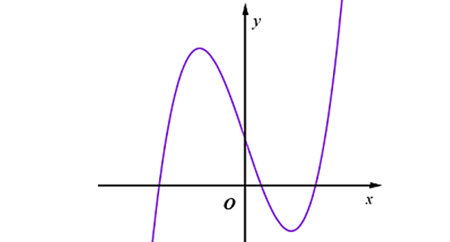
Question 7. Cho hình lập phương $ABCD.A'B'C'D'$.
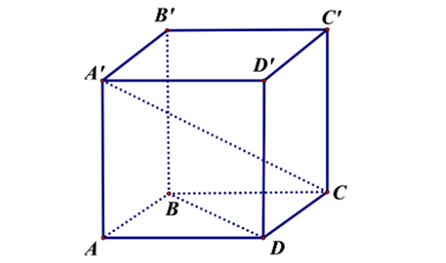
Khẳng định nào dưới đây là đúng?
Question 8. Hàm số $y = f (x) = 2x^3 – 9x^2 - 24x +1$ nghịch biến trên khoảng:
Question 9. Giá trị nhỏ nhất của hàm số $y = \sqrt{7–6x}$ trên đoạn $[-1;1]$ bằng
Question 10. Quan sát bảng biến thiên dưới đây và cho biết bảng biến thiên đó là của hàm số nào?
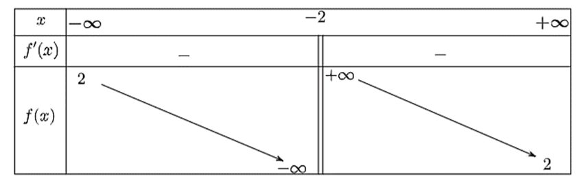
Question 11. Xác định $a,b,c$ để hàm số $y = \frac{ax-1}{bx + c}$ có đồ thị như hình vẽ dưới đây.
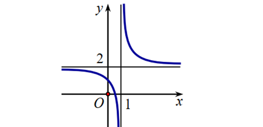
Chọn đáp án đúng.
Question 12. Cho hình lăng trụ $ABC.A'B'C'$ có hai đáy là các tam giác đều như hình dưới.
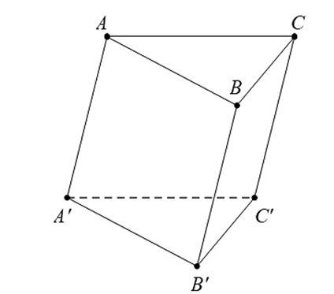
Góc giữa hai vectơ $\overrightarrow{BC}$ và $\overrightarrow{A'C'}$ bằng
Question 13. Cho hàm số $y = f(x)$ xác định trên $\mathbb{R} \setminus \{-2\}$ và có bảng biến thiên như sau:
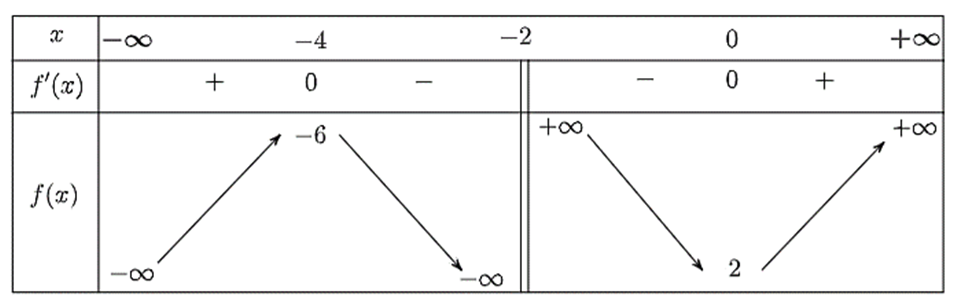
Question 14. Cho hàm số $y = \frac{x^2-2x-3}{x-2}$.
Question 15. Cho hình hộp chữ nhật $ABCD.A'B'C'D'$. Khi đó:
Question 16. Cho hình chóp tứ giác đều $S.ABCD$ có độ dài tất cả các cạnh đều bằng $a$. Đáy $ABCD$ có tâm là $O$. Khi đó:
Question 17. Cho hàm số $y = f(x)$ có đạo hàm trên $\mathbb{R}$ và đồ thị hàm số $y = f'(x)$ như hình vẽ dưới đây.
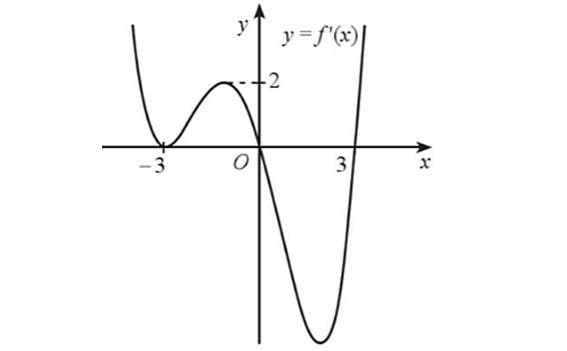
Xét hàm số $g(x) = f(x)-x$. Hàm số $g(x)$ có bao nhiêu điểm cực trị?
Question 18. Cho hàm số $y = \frac{x+m}{x+1}$ với $m>1$. Với giá trị nào của tham số $m$ thì hàm số đã cho có giá trị lớn nhất trên đoạn $[1;4]$ bằng 3?
Question 19. Trong không gian, cho hai vectơ $\vec{a}$ và $\vec{b}$ cùng có độ dài bằng 1 và góc giữa hai vectơ đó bằng $45^\circ$. Giá trị của tích vô hướng $(\vec{a}+3\vec{b}) \cdot (\vec{a}-2\vec{b})$ bằng bao nhiêu (làm tròn kết quả đến hàng phần mười)?
Question 20. Ông Hùng cần đóng một thùng chứa gạo có dạng hình hộp chữ nhật không có nắp đậy để phục vụ cho việc trưng bày gạo bán tại cửa hàng. Do các điều kiện về diện tích cửa hàng và kệ trưng bày, ông Hùng cần thùng có thể tích bằng 2 m³. Trên thị trường, giá tôn làm đáy thùng là 100 000 đồng/m² và giá tôn làm thành xung quanh thùng là 50 000 đồng/m². Hỏi ông Hùng cần đóng thùng chứa gạo với cạnh đáy bằng bao nhiêu mét để chi phí mua nguyên liệu là nhỏ nhất, biết đáy thùng là hình vuông và các mối nối không đáng kể (làm tròn kết quả đến hàng phần mười).
Question 21. Ngân có một tấm giấy màu có dạng nửa hình tròn bán kính 8 cm. Ngân cần cắt từ tấm giấy màu này ra một tấm giấy hình chữ nhật có một cạnh thuộc đường kính của nửa hình tròn (xem hình dưới) sao cho diện tích của tấm bìa được cắt ra là lớn nhất. Giá trị lớn nhất của diện tích tấm bìa đó là bao nhiêu centimét vuông?
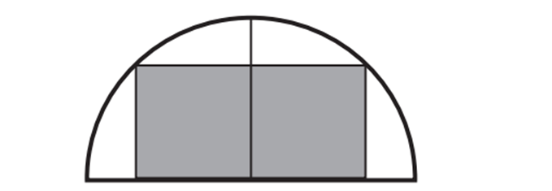
Question 22. Độ lớn của các lực căng trên mỗi sợi dây cáp trong hình dưới đây bằng bao nhiêu Newton? Biết rằng khối lượng xe là 1 500 kg, gia tốc là 9,8 m/s², khung nâng có khối lượng 300 kg và có dạng hình chóp $S.ABCD$ với đáy $ABCD$ là hình chữ nhật tâm $O$, $AB = 8$ m, $BC = 12$ m, $SC = 12$ m và $SO$ vuông góc với $(ABCD)$. Làm tròn kết quả đến hàng đơn vị của Newton.
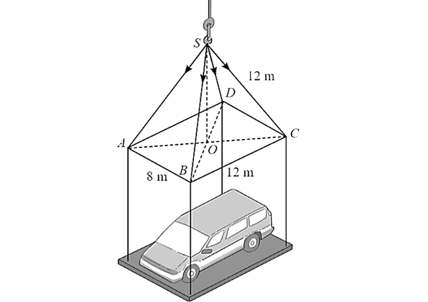